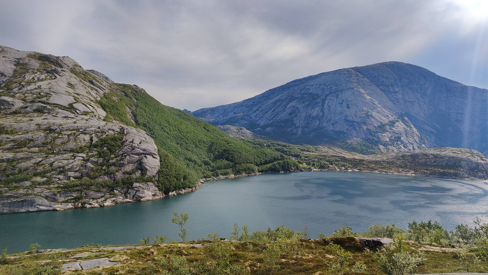
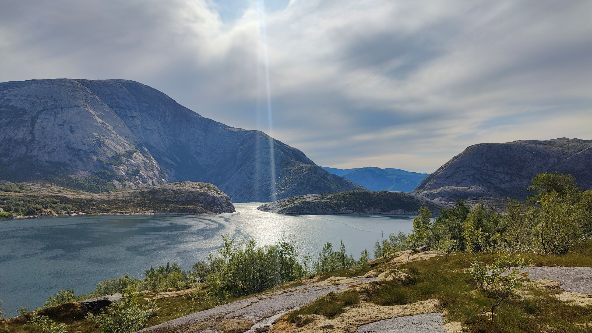
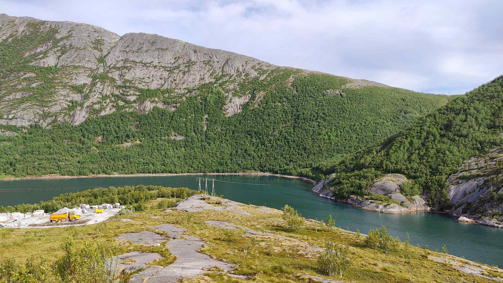
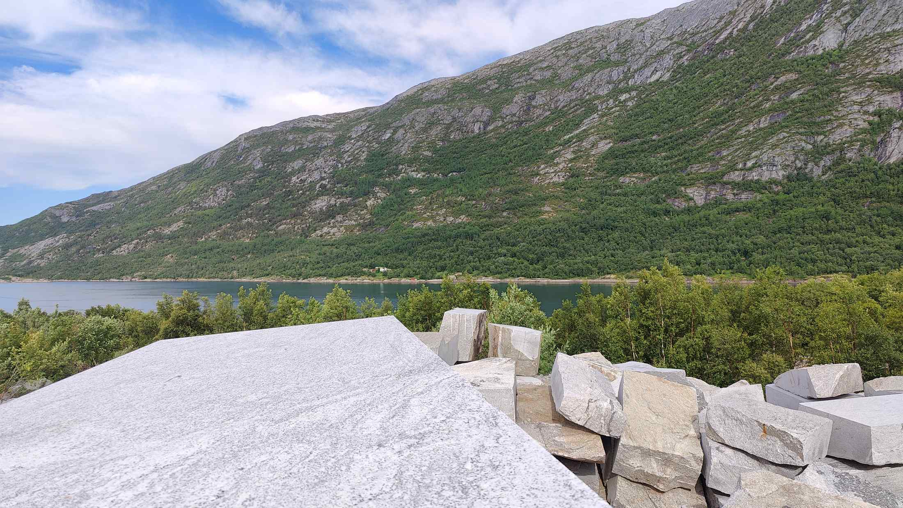
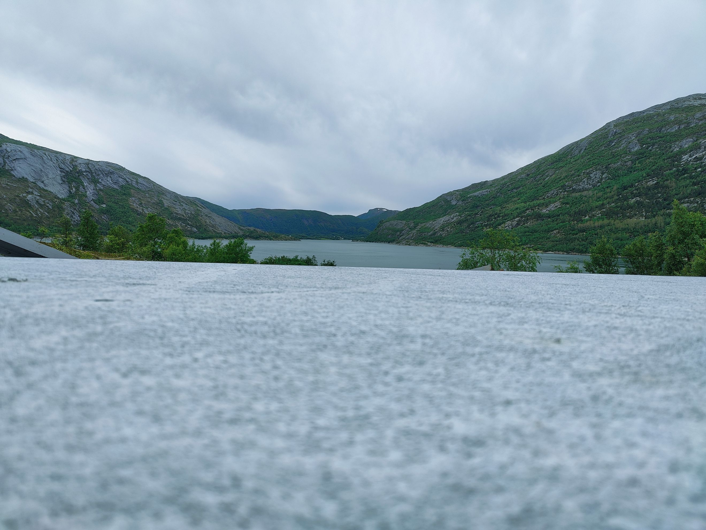
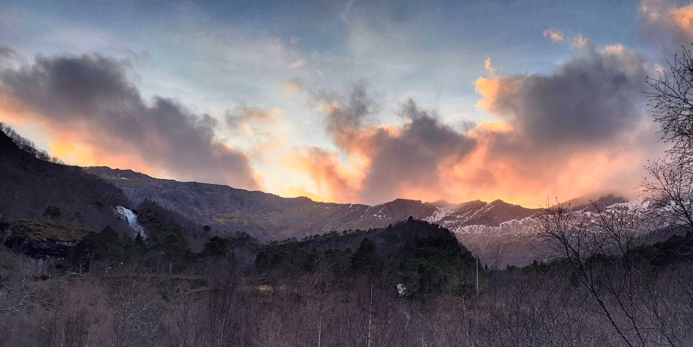
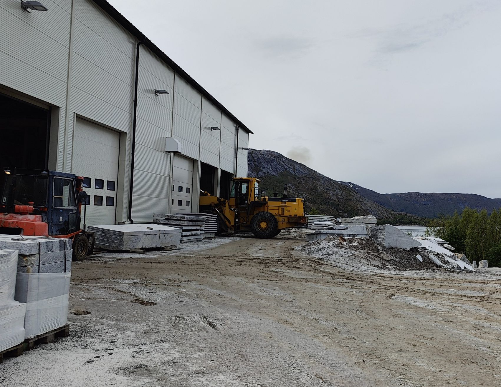
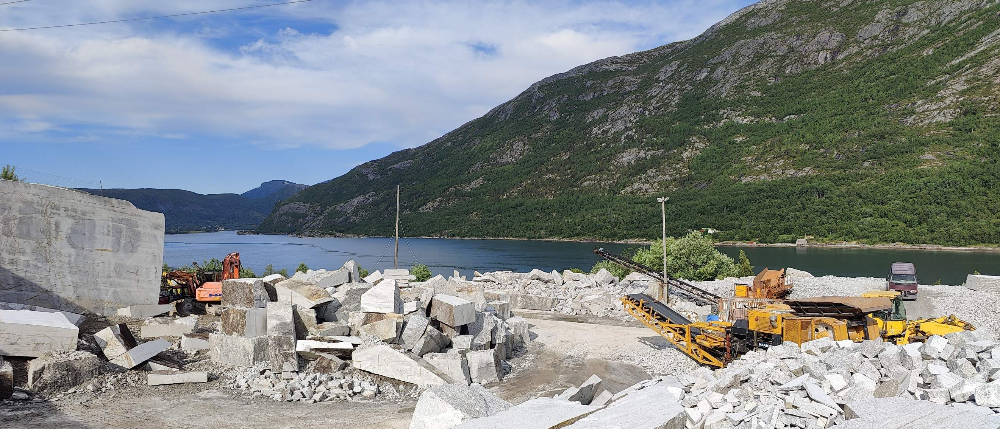

Ved en ren tilfeldighet, ble det tidlig på 80-tallet oppdaget en forekomst av massiv og lys granitt, i Evjen.

Skumringsstripene etter isens bevegelse under siste istid, viste nærmest ingen forvitring av granitten.
Dette ble på mange måter en første bekreftelse på at granitten ville ha meget god kvalitet som bygningsmaterialer i vårt klima.

En tanke om utnyttelse av ressursen, ble derfor en naturlig oppfølging. Oppdagelsen dannet etter hvert grunnlaget for en ny æra, og familiebedriften Evjen Granittbrudd AS ble etablert på slutten av 1980-tallet.

Det har underveis vært gjennomført reetableringer til det som nå er Evjen Granitt AS, og strukturen er endret fra en liten familiebedrift til en betydningsfull produksjonsbedrift, med både eksterne medarbeidere og eiere. Bedriften er lokalisert i vakre omgivelser ytterst i Beiarfjorden, med postadresse Nygårdsjøen.

Med vakker granitt av høy kvalitet, ekte håndverk, nord-norsk stolthet og personlig oppfølging,
sørger vi for livslange produkter med utsøkt kvalitet.
Fra 2020 har vi hatt samarbeidsavtale med Beer Sten AS i Fredrikstad, vedr. markedsføring og salg.

I tillegg til granittens vakre og unike utseende, er vi dedikert til å levere kvalitet
med grønt fotavtrykk.
Dette lykkes vi med bl.a. gjennom at tilnærmet 100 % av ressursen
som tas ut, bearbeides.
Avstand fra granittbrudd til produksjonslokalene, er kort, samt
at vann som energikilde resirkuleres.

Som en følge av relativt store investeringer, har bedriften ekspandert betydelig
de senere år.
Det nye og tidsriktige produksjonsutstyret, bidrar til at vi nå har
fått betydelig produksjonskapasitet,
og er leveringsdyktige til både små og store prosjekter.

I tillegg til å stå stødig på et solid og unikt norsk fjell – en vakker lys granitt, har vi tidsmessige produksjonslokaler, moderne produksjonsutstyr og viktigst av alt: Dyktige medarbeidere med høy kompetanse. Vi er små nok til å være fleksible, men store nok til å levere – hos oss vil du møte medarbeidere som bryr seg.